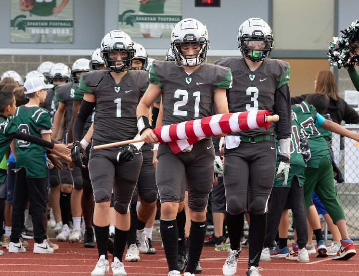
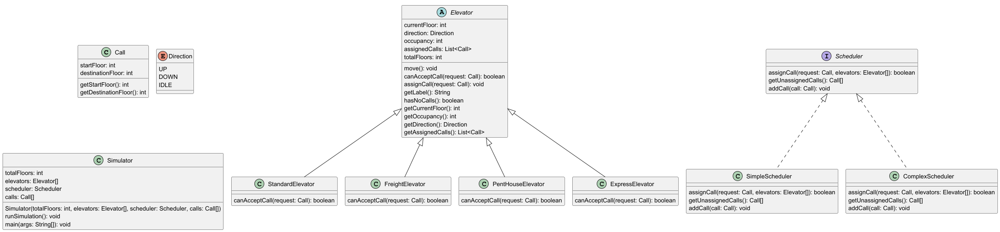

Hi, my name is Mike Roni. I was born and raised in Sammamish, Washington in a family of 6. I am a currenlty a Junior Computer Science Major at the University of San Diego where I also play football.
Throughout my college career at the Universtiy of San Diego and San Diego State University I have worked on countless project across many languages. I have worked in Java, JavaScript, C, C++ and Python. I currently have a fascination with AI and the ever growing field that it is. This lead me to pick my Computer Science major focus as Artifical Intelligence and Data Science.
Outside of academics, I find most of my time going towards the football team. But outside of this, I enjoy lots of outdoors activites. I like playing sports such as golf or basketball, I also enjoy spending time with friends and family.
Projects

The Birthday Paradox Simulator
The birthday paradox is the surprising fact that with just a group of 23 people, there is 50% chance that at least two people will have the same birthday.
In this project my partner and I built a simulator that calculates how often based on 20 trials a given size group will have two people with the same birthday. These group sizes ranged from 5 to 100 in increments of 5. The program then outputs a table with the the number of people in the trial (5-100) and what percentage of the 20 trials had a matching birthday.
In this project I was responsible for implementing both the birthday and simulator class. In the birthday class I created the constructor that generates random birthdays using a shared random number generator and ensured that these birthdays were realistic (Ex: No Februrary 30th). I also implemented comparison logic so that two Birthday objects could be compared to see if they were the same date. In the simulator class I structured the general execution of the program. Here I intitalized the random number generator, coordinated the multiple trials for each group size, and formated the final results into clean and readable table.
Throughout the project I learned how to structure multi class programs, manage shared resouces with a partner, and improved my implementation of clean coding practices.

Elevator Simulator
The project is a simulator of four types of elevators that work in tandem to service calls in a building. The goal is to design a system and scheduler that can simulate multiple elevators, each supporting different behaviors and restrictions. Each elevator receives calls containing a starting floor and a destination floor, and must track its current floor, direction, occupancy, and assigned calls. The four elevator types are Standard, Freight, PentHouse, and Express, each with unique rules for which calls they can accept and how they move through the building. The project allowed us to incorporate our learnings of the four pillars of OOP, the SOLID principles, clean coding practices, test driven development, and collaborating with a partner through GitHub.
The program simulates an elevator system for a building. The simulator is configured through seven command line arguments: the number of floors in the building, the scheduler type, the number of each elevator type to use, and the file containing the initial calls. The simulator reads all calls from the file and loads them into the scheduler before the simulation begins. The simulation runs round by round. Each round the scheduler assigns at most one call to an elevator, then every elevator moves one floor toward completing its assigned calls. Elevators must idle for one round when picking up or dropping off a passenger, and must also idle for one round when changing direction. If no elevator can accept the current call, the simulator waits until the next round to try again. There are two types of schedulers. The Simple Scheduler checks elevators from left to right and assigns the call to the first elevator that can accept it. The Complex Scheduler checks the position and direction of every elevator and assigns the call to whichever elevator can reach the pickup floor in the fewest rounds. There are four types of elevators, each with unique restrictions. The Standard Elevator can visit every floor and accepts calls in the same direction of travel. The Freight Elevator can visit every floor but only accepts one passenger at a time and will not take a new call unless empty. The PentHouse Elevator only travels between floor 1 and the top floor. The Express Elevator only services the top half of the building and floor 1, accepting new calls in the same direction when occupied. Each elevator tracks its current floor, direction, occupancy, and assigned calls. When an elevator has no calls it returns to floor 1 and waits idle until assigned a new call. The simulation ends when all calls have been completed and every elevator has returned to floor 1. Each round the simulator prints the floor, direction, occupancy, and assigned calls of every elevator as well as the list of unassigned calls.
Our design centers on the four pillars of OOP. We used Abstraction by defining Elevator as an abstract class that represents shared behavior like tracking calls, occupancy, and returning to floor 1, without exposing the specific logic of each elevator type. The Scheduler interface is another example of abstraction — it defines what a scheduler must do without dictating how it does it. A good example of this is hasNoCalls(), which lets other components check elevator availability without needing to know how that state is internally tracked. We used Inheritance to create four specialized elevator types that all extend the base Elevator class. This allowed us to reuse common attributes and behavior like move(), assignCall(), and returnToFloorOne() while giving each subclass the freedom to implement its own specific rules for accepting calls through canAcceptCall(). For Encapsulation, each elevator manages its own state — its floor, direction, occupancy, and call list — through controlled methods like assignCall() and getters like getCurrentFloor(). This prevents external components like the Simulator from directly accessing or modifying internal data. Finally, Polymorphism allows the Simulator to treat all elevator types uniformly, calling methods like move() and canAcceptCall() regardless of whether it is a Standard, Freight, PentHouse, or Express elevator. The same flexibility applies to our Scheduler implementations, which can be swapped between Simple and Complex without changing any simulator logic. The architecture also reflects several SOLID principles. We followed the Single Responsibility Principle by giving each class a distinct role — Call manages trip data, Elevator manages movement and state, and the Scheduler manages call assignment. The design supports the Open/Closed Principle and Liskov Substitution by allowing new elevator types to be added through inheritance without modifying existing code — any subclass can stand in for the base Elevator without breaking the system. We applied the Interface Segregation Principle through a Scheduler interface that includes only the essential methods addCall(), assignCall(), and getUnassignedCalls(). Finally, the Dependency Inversion Principle is reflected in the Simulator depending on the Scheduler interface rather than a specific implementation, making it easy to switch between scheduling strategies.
In this project I was responsible for implementing the Elevator abstract base class and all four elevator subclasses. I followed test driven development process. This meant building out canAcceptCall(), assignCall(), and move() for each elevator type one test at a time. One of the more interesting challenges was tracking passenger pickup correctly. I introduced a pickedUpCalls list to prevent occupancy from being incremented multiple times when move() was called repeatedly on the same floor.
Through this project I got much more comfortable with test driven development and applying it in a real system. Following test driven development from start to finish gave me a much better understanding of why writing tests first leads to cleaner, more reliable code. I also improved at collaborating through GitHub, using branches, pull requests, messages, and code reviews to coordinate with my partner effectively.
Contact Me
email address